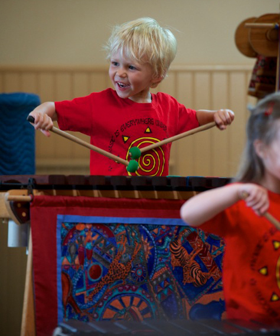
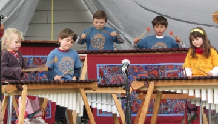

<mat-card>
    <mat-card-header>
        <mat-card-title>Welcome to Woodruff Music School</mat-card-title>
    </mat-card-header>
    <mat-card-content>
        <mat-grid-list cols="2" rowHeight="300px" gutterSize="0">
            <mat-grid-tile *ngFor="let card of cards" [colspan]="card.cols" [rowspan]="card.rows">
                <mat-card [ngSwitch]="card.title">
                    <mat-card-content *ngSwitchCase="'Description'">
                        Celebrating the joyful expression of music, surrounded by a beautiful cottage garden setting, 
                        Woodruff Music School has been nurturing musical connections in the Cowichan Valley for over 25 years.
                    </mat-card-content>
                    <mat-card-content *ngSwitchCase="'SmallImage'">
                        
                    </mat-card-content>
                    <mat-card-content *ngSwitchCase="'BigImage'">
                        
                    </mat-card-content>
                </mat-card>
            </mat-grid-tile>
        </mat-grid-list>
    </mat-card-content>
</mat-card>